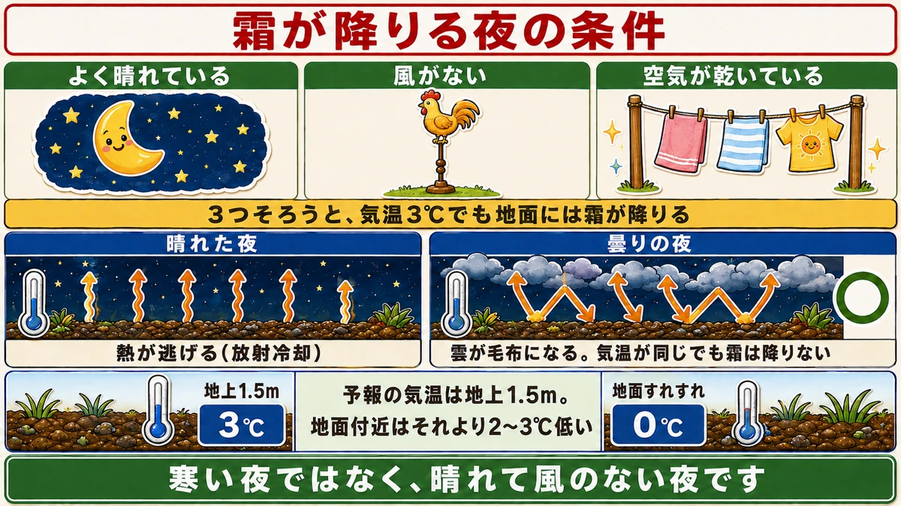
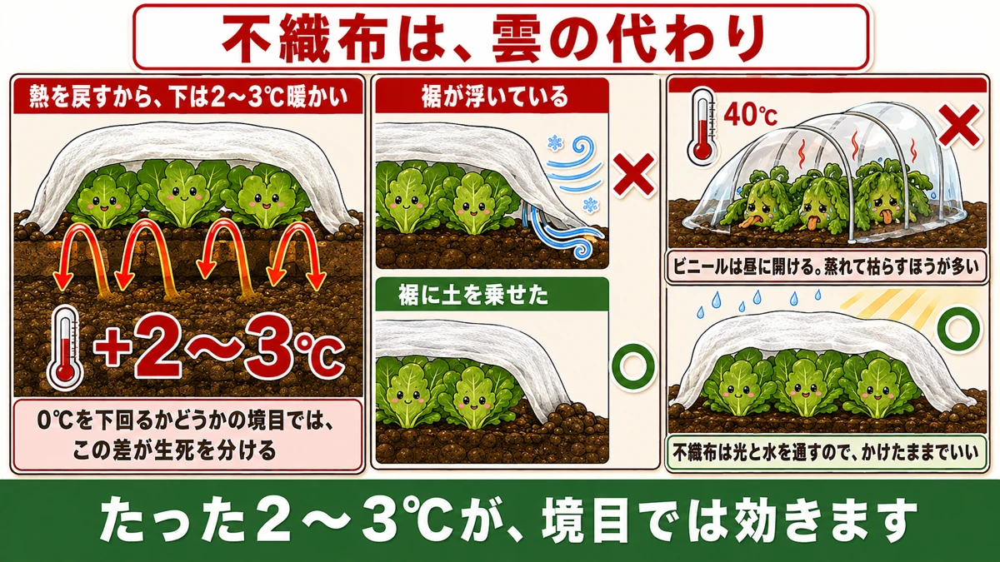
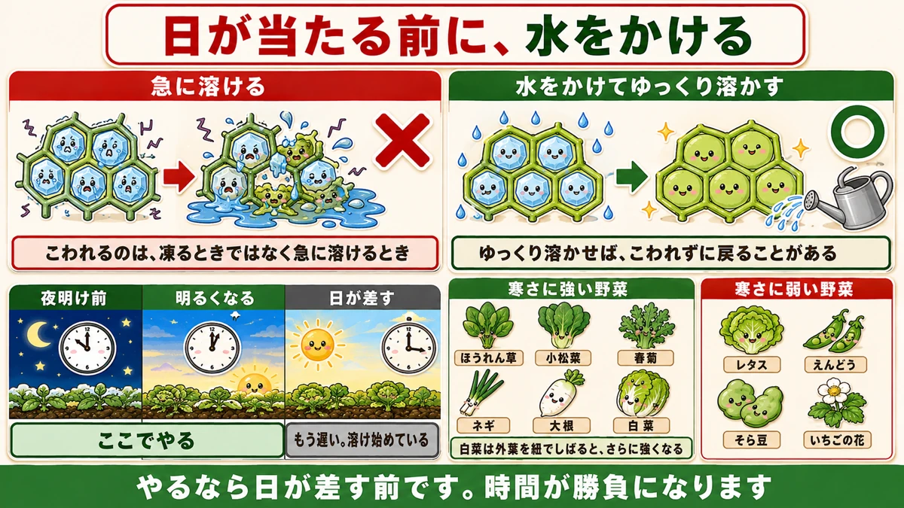

Frost comes on clear nights, not cold ones ❄️ You can read tomorrow's frost the evening before

❄️ "Same plot, and some plants died while others are fine."
❄️ "It wasn't as cold as yesterday, but this morning there was frost."
❄️ "Does fleece really do that much?"
Hello, I'm Eiko. Eight years of growing vegetables organically and without pesticides, and a teaching licence in science.
The headline:
Frost doesn't come on cold nights. It comes on still, clear ones.
At the same temperature, under cloud there is no frost. Once you know that, you can read "tonight is dangerous" the evening before.
Three conditions for frost

What this diagram says （図解の文字）
- The conditions for a frosty night: "clear sky" ／ "no wind" ／ "dry air"
- "All three together and frost forms at ground level even at 3 °C air temperature"
- Clear night — "heat escapes (radiative cooling)" ／ cloudy night ○ "cloud acts as a blanket. Same temperature, no frost"
- "The forecast is measured at 1.5 m. Near the ground it is colder"
- Clear sky
- No wind
- Dry air
All three together and frost forms at ground level even when the air is at 3 °C (37 °F) — because forecast temperatures are measured at 1.5 m (5 ft), and it's 2–3 °C (4–5 °F) colder near the ground.
"The forecast says 3 °C, so we're fine" is not safe.
My own trigger: 7 °C
I use a forecast minimum of 7 °C (45 °F). If the minimum drops below that, and the night is still with clear stars, I act as though there will be frost by morning.
Seven sounds early. But near the ground it's 2–3 °C lower, which lands exactly on the boundary.
Why clear nights are colder
The ground is warmed by the sun during the day, and at night it throws that heat back toward the sky. That's radiative cooling.
Cloud reflects the heat back down — a blanket. A clear sky lets it go straight out into space, so clear nights get colder.
Wind also prevents frost: it stirs the air so the layer near the ground can't cool on its own.
The same plot varies place to place
This answers "some died and some didn't". Where the sun doesn't reach, needle ice doesn't melt by midday — and freezes again the following night, so the soil is lifted further each time.
Look at the sunny patch beside it: melted by mid-morning and back to bare dark soil. Same plot, very different conditions.
The other big difference is containers. Raised off the ground and exposed on all sides, they run about 7 °C (13 °F) colder than open ground. If you grow on a balcony, you need to protect a step earlier than a gardener with a plot.
Why one layer of fleece works

What this diagram says （図解の文字）
- Fleece stands in for cloud
- "It returns the heat, so it's 2–3 °C warmer underneath"
- "At the boundary either side of 0 °C, that difference decides life or death"
- ✗ "hem lifting" ／ ○ "hem weighted with soil"
- ✗ 40 °C — "open plastic in the daytime; more plants are lost to overheating than to frost"
- ○ "fleece passes light and water, so it can stay on"
Fleece is a stand-in for cloud. It reflects the heat leaving the ground back down, and that alone keeps it 2–3 °C warmer underneath.
Two or three degrees sounds trivial. At the boundary either side of freezing, it decides whether a plant lives.
Just lay it over — no frame needed
You don't need hoops. Lay it loosely straight over the plants.
What matters is the hem. A lifted hem lets cold air in and the whole thing is pointless — weight it with soil or peg it down.
You don't have to take it off during the day. Fleece passes light and rain, so it can stay.
That's actually my main reason for recommending it: no ventilating. Busy days, wet days, days you can't get to the plot — it just stays on. In a home garden, that's the biggest thing of all.
Plastic can backfire
If you use unperforated clear plastic, you must open it in the daytime.
With 15 °C (59 °F) outside, it can exceed 40 °C (104 °F) inside. "It's winter, it'll be fine" does not hold — more plants are cooked under plastic than are killed by frost.
And the less well-known half: sealed up at night, it can be colder inside than out. Radiative cooling again — the sealed air doesn't move, so the heat lost from the ground simply leaves a cold pool underneath. You set out to protect them and built the coldest place in the garden.
So for a home garden, perforated plastic is the default — ventilated by design, and forgetting to open it isn't an accident.
The numbers bear it out: under perforated plastic one bed measured 31 °C while bare mulch beside it was 23 °C — 8 °C (14 °F) apart.
Don't try to do it with one layer
Mulch, fleece, perforated plastic, insect netting — every one of them is weak on its own. Expecting a single sheet to carry a plant through winter was never realistic. For tender crops, and for plants that got too big, layer them.
For overgrown peas I use three: clear mulch → fleece → perforated plastic.
When to take it off
Easily forgotten. Once the coldest period has passed, take it off promptly. Left on, the growth underneath tangles, airflow drops and disease appears — the protection becomes the problem.
My guide is my own clothing: a jacket is enough for the plot → one perforated sheet; a down coat → full protection; once the down comes off → start removing layers. That won't put you far wrong.
The other damage: being lifted out
Not frozen — heaved
Frost doesn't only kill by freezing. Needle ice lifts plants out of the ground, soil and all.
Shallow-rooted crops suffer — onions and peas. After enough frosts, the plant is lifted clear, the roots are exposed, and it dries out and dies. Badly affected ones blow away.
A common onion failure is needle ice forming inside the planting hole in mulch film — lifted out of the hole and gone.
It really happens that at ten in the morning there's still 2 cm of needle ice and the soil has risen 1–2 cm.
Covering the crown stops it
Do this before you reach for fleece:
- Lay straw or dry grass along the bed
- Scatter rice hull biochar around the crowns
One caution with straw: short pieces blow away. Use it long, laid along the row.
Between rice hulls and biochar I prefer the biochar: being black it absorbs sun and raises soil temperature, it adds minerals, and it carries less pest risk. It's also hard to overdo.
Concentrate on the shaded spots where the ice doesn't melt.
One move in the morning saves plants

What this diagram says （図解の文字）
- Water them before the sun reaches them
- ✗ "thawing suddenly" — "the damage happens on thawing, not on freezing"
- ○ "water it and let it thaw slowly" — "thawed slowly, it can recover undamaged"
- "before dawn" → "getting light — do it here" → "sun up — too late, it's already thawing"
A little-known remedy. On a frosty morning, before the sun reaches them, water the plants from above.
Because frozen cells are destroyed not by freezing but by thawing suddenly. Hit by sun, the ice melts fast, water moves all at once and the tissue breaks. That's what "frost damage" is.
Thaw it slowly with water and it can come back undamaged.
It's a race
Do it before the sun strikes. Once it's light, hurry. After the sun is on them there's no point — it has already started.
Through winter I go out with a hose on clear mornings. It has saved a good many cabbages.
But watering the soil is a different matter
Keep these apart. Wetting the leaves to thaw them: good. Watering the soil: bad.
Water round the crown in deep winter makes needle ice more likely, drops the soil temperature, and the plant goes from the base.
The commonest version is seeing yellow leaves, reading it as thirst, and watering. Yellow in winter is not thirst.
Easy check: dig 2–3 cm beside the plant. If it's damp, it doesn't need water — and in winter it usually is.
If you must, water in the morning or during a sunny day. Evening and night water simply freezes.
Other things not to do
- Don't strip dead leaves from around the crown. Removing them exposes the plant to cold wind. Do it in early spring
- When clearing snow, don't cut the stems with it — a common loss with peas
- When pushing lifted soil back, don't dig deep. Just work the surface, or you damage roots
Which crops are hardy, and which aren't
Hardy
- Spinach, komatsuna, chrysanthemum greens, spring onions — fine to about −5 °C (23 °F)
- Onions — in early growth they take −8 °C (18 °F)
- Radish, carrot — the tops may be damaged, the root is safe underground
- Cabbage, Chinese cabbage — once hearted, the outer leaves protect them
That onion figure surprises people. Onions don't need a winter tunnel. All they need is not to be heaved out — straw and biochar, as above.
One condition on radishes: if the shoulder stands out of the soil and takes frost, the root goes pithy. When the soil settles and the shoulder shows, draw soil up to it.
Tying a Chinese cabbage's outer leaves over its head makes it hardier still — and an untied one gets pecked by birds where the head shows.
Tender
- Lettuces — frost damages the outer leaves
- Peas and broad beans — an overgrown plant freezes at the tips
- Strawberries — the plant is fine, but early flowers freeze and never fruit
- Sweet potato, ginger — frost on the leaves rots down the stems into the tubers. Lift before the first frost, without fail
Cover only the tender ones. You don't have to protect everything.
"Too big" has numbers
With peas and broad beans this isn't a feeling:
- Peas are most frost-resistant at 10–15 cm (4–6 in) tall going into winter
- Over 20 cm (8 in), insect netting isn't enough — use a fleece tunnel
- Broad beans: under 20 cm, or 30 cm (12 in) at the outside. Over 30 cm, pinch out the tips
Small looks more vulnerable. It's the opposite: the bigger the plant, the more its extended tips freeze.
So sowing two or three weeks later is itself a form of frost protection. And with broad beans the same holds — a large plant is a less hardy plant. Overfeeding causes overgrowth too, so I feed only once, by late winter.
Can a damaged plant recover?
Two stages, told by colour
- Stage 1: the leaves turn yellow. It looks like a nutrient problem, so it's missed
- Stage 2: leaves or the growing point turn black. Frost formed overnight, froze, and the tissue died
Watch the colour. Yellow is still in time. Black does not come back.
Which recover and which don't
Recover:
- Broad beans — plenty of side shoots, so they can be rebuilt. Cut off a blackened tip and a live side shoot carries on
- Onions and garlic — leaves dying back in winter is normal. If the central bud is alive, they'll come through. Garlic is storing reserves in the root as the leaves die back
- Autumn potatoes, taro — the tops may be killed, the tubers are fine. Only until the year turns, though; in deep winter they do spoil
Don't recover:
- Peas — few side shoots, so once the growing point and the side shoots are dead, nothing comes in spring. Replanting is the only option
- Sweet potato, ginger — rot travels down into the tuber
- Radish — once the shoulder is pithy, that's that
So peas are the top priority to protect. Onions will get through on their own.
Before you pull up something whose leaves have died, look at the centre of the crown. If the bud is green, it's alive.
Science bit: how ice destroys a plant 🔬
Water expands about 9 % when it freezes. Almost everything contracts when cooled; water is the exception.
That's a serious problem for a plant. Water inside a cell freezes, expands, and breaks the cell wall from within. A broken cell spills its contents on thawing — which is what a black, slimy leaf is.
So why are some crops hardy? Because they dissolve sugar into that water and lower its freezing point.
Sugar solution freezes less readily than plain water — the same reason juice takes so long to freeze in a home freezer.
To sum up
- ✅ Frost needs clear, still, dry. Under cloud, none
- ✅ Forecast minimum 7 °C + still + clear = frost by morning
- ✅ Forecasts are measured at 1.5 m; ground level is 2–3 °C colder, containers about 7 °C colder
- ✅ Shaded spots keep their ice — the same plot varies
- ✅ Fleece is a stand-in for cloud: 2–3 °C, and no ventilating
- ✅ Weight the hem. A lifted hem wastes it
- ✅ Sealed plastic: 40 °C by day, and colder than outside at night. Use perforated
- ✅ Layer them. One sheet is never enough for a tender or overgrown plant
- ✅ Straw or biochar at the crown against heaving
- ✅ Water the leaves before sunrise to thaw them slowly — but never water the soil
- ✅ Peas overwinter best at 10–15 cm. Onions need no tunnel
- ✅ Yellow is recoverable; black is not. Check the central bud before pulling anything
- ✅ Take the covers off as soon as the cold passes
You don't have to do all of it. Look at tonight's forecast: if the minimum is under 7 °C and it's clear and still, put one sheet of fleece on. That alone changes the morning ❄️
Thank you for reading!